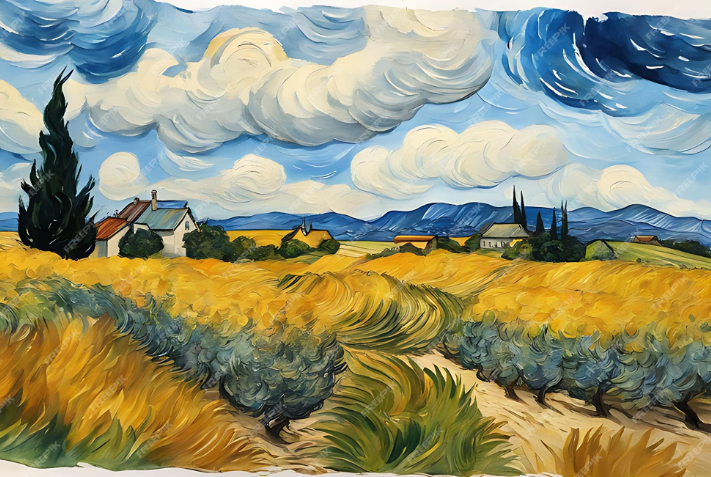

Van Gogh
1869–1876 წლებში სამხატვრო-სავაჭრო ფირმის კომისიონერად მუშაობდა ჰააგაში, ბრიუსელში, ლონდონსა და
პარიზში, 1876 წელს მასწავლებლობდა ინგლისში. შეისწავლა თეოლოგია და 1878–1879 წლებში მოძღვრად იყო ბორინაჟში
(ბელგია), სადაც გაეცნო მაღაროელთა მძიმე ცხოვრებას. მშრომელთა ინტერესების დაცვის ნიადაგზე კონფლიქტი მოუვიდა
ეკლესიის მესვეურებთან. 27 წლისამ გადაწყვიტა ხატვა შეესწავლა. ესწრებოდა ლექციებს ბრიუსელისა (1880 – 1881) და
ანტვერპენის (1885– 1886) სამხატვრო აკადემიებში. 1881–1885 წლებში ვან გოგი გატაცებით ხატავდა ბორინაჟის
მაღაროელებს, გლეხებს, ხელოსნებს, მეთევზეებს. 30 წლისამ მუშაობა დაიწყო ფერწერაში, უბრალო ადამიანებისადმი ღრმა
თანაგრძნობით განმსჭვალულ, მუქ, პირქუშ ტონებში შესრულებულ სურათებსა და ეტიუდების სერიაში („გლეხის ქალი“, 1885,
კრელერ-მიულერის სახელმწიფო მუზეუმი, ოტერლო; „კარტოფილის მჭამელები“, ვ. ვან გოგის ფონდი, ამსტერდამი). ვან გოგი
ავითარებდა XIX საუკუნის კრიტიკული რეალიზმისა და განსაკუთრებით ჟან ფრანსუა მილეს შემოქმედებით ტრადიციებს.
1886–1888 წლებში ვან გოგი ცხოვრობდა პარიზში, სადაც თავისი ძმის თეო ვან გოგის დახმარებით გაეცნო ქალაქის სამხატვრო
ცხოვრებას (თეო ვან გოგი, პარიზის ერთ-ერთი გალერეის დირექტორი, მთელი ცხოვრების მანძილზე მორალურად და მატერიალურად
ეხმარებოდა ძმას). პარიზში ვან გოგი კერძო სტუდიაში სრულყოფდა ხატვის ტექნიკას. ითვისებდა იმპრესიონისტების (კლოდ
მონე, კამილ პისარო, ალფრედ სისლეი) პლენერულ ფერწერას და სწავლობდა იაპონურ გრავიურას. დაუახლოვდა ანრი დე
ტულუზ-ლოტრეკსა და პოლ გოგენს. ამ დროიდან ვან გოგის პალიტრაზე მუქი ფერები კაშკაშა და მოციმციმე ცისფერმა,
ოქროსფერმა და წითელმა ტონებმა შეცვალა. ფუნჯის მონასმი უფრო თამამი და დინამიკური გახდა ("ხიდი სენაზე“, 1887, ვ.
ვან გოგის ფონდი, ამსტერდამი და სხვ.).
